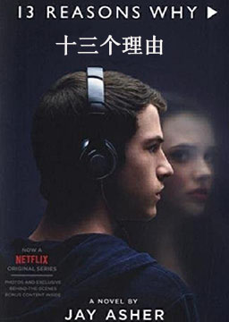
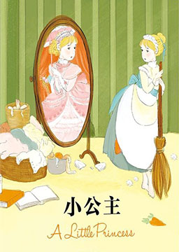

双语小说
收录中英文双语小说300多部，包括世界经典名著、社会小说、悬疑小说等短篇和长篇小说，可按照初中难度、高中难度和大学难度分类阅读，每部小说都有分段中英文对照，点击单词可查看中文翻译。

瓦尔登湖 (Walden)
作者：亨利·戴维·梭罗 (Henry David Thoreau) [美国]
超验主义经典作品，在美国文学中被公认为最受读者欢迎的非虚构作品，2020年4月，列入《教育部基础教育课程教材发展中心 中小学生阅读指导目录（2020年版）》初中段。内容简介：美国作家梭罗独居瓦尔登湖畔。故事由18篇散文组成，描绘了他两年多时间里的所见、所闻和所思。该书崇尚简朴生活，热爱大自然的风光，内容丰厚，意义深远，语言生动。在四季循环更替的过程中，详细记录了梭罗内心的渴望、冲突、失望和自我调整，以及调整过后再次渴望的复杂的心路历程，几经循环，直到最终实现为止。表明了作者用它来挑战他个人的、甚至是整个人类的界限。但这种挑战不是对实现自我价值的无限希望，而是伤后复原的无限力量。盐的代价 (The Price of Salt)
作者：派翠西亚·海史密斯 (Patricia Highsmith) [英国]
小说改编的剧情片《卡萝尔》，获得第68届戛纳国际电影节金棕榈奖提名。内容简介：年轻女子特芮丝在纽约百货公司担任售货员，但心中向往的却是摄影师工作。某日，一位美丽优雅的金发贵妇卡罗尔来到百货公司购买圣诞节礼物，结果和特芮丝一见投缘。两人相识后特芮丝得知原来卡罗尔有一个女儿，而且正和丈夫哈吉办理离婚手续。通过书信来往、约会相处以及公路旅行，特芮丝和卡罗尔发现彼此就是自己的真爱，然而在当时社会这是不被允许的。特芮丝的男友认为她只是一时迷惑，卡罗尔的丈夫则请私家侦探调查取证，希望在离婚诉讼让中她一无所有。考验两位女性的时刻终于到来了：在社会压力下她们能否坚守内心、不计代价的把感情路走到底？
十三个理由 (13 Reasons Why)
作者：杰伊·艾夏 (Jay Asher) [美国]
这将是你遇见的前所未有的难读之书。此言貌似批评，实则褒扬，作者埃舍天赋过人，将一起自杀事件引起的痛苦余波刻画得丝丝入扣，哀婉动人。悬疑迭起，又伤到极致，更犹如一场虔敬回溯过往的仪式。内容简介：嗨，我是汉娜·贝克。接下来，我将告诉你，我所经历过的一切。如果你也听到了录音带，那么，你就是我结束生命的理由之一。名单上的某些人，或许你们根本不觉得自己做错了什么，因为你永远不知道，自己对别人做的事，将如何影响他的一生……中学生汉娜过世后，留下七盒磁带。分别寄给十三个同学，在录音中，她一一追诉往事，发出质询……随着一盒又一盒磁带的揭示，在悬念丛生中，反思了中学阶段时人文教育的缺失，发人深思。马克·吐温短篇小说精选 (Selected Stories by Mark Twain)
作者：马克·吐温 (Mark Twain) [美国]
马克·吐温一生写了大量作品，题材涉及小说、剧本、散文、诗歌等各方面。从内容上说，他的作品批判了不合理现象或人性的丑恶之处，表达了这位当过排字工人和水手的作家强烈的正义感和对普通人民的关心；从风格上说，专家们和一般读者都认为，幽默和讽刺是他的写作特点。
无声告白 (Everything I Never Told You)
作者：伍绮诗 (QiShi Wu) [美国]
故事编排精妙细致，文笔沉稳内敛，一经出版便广受好评，成为2014年度最具实力且众望所归的黑马。内容简介：我们终此一生，就是要摆脱他人的期待，找到真正的自己。莉迪亚死了，可他们还不知道。莉迪亚是家中老二，李先生和李太太的掌上明珠，她遗传了母亲的蓝眼睛和父亲的黑头发。父母深信，莉迪亚一定能实现他们无法实现的梦想。莉迪亚的尸体被发现后，她的父亲内疚不已，母亲则一心报复。莉迪亚的哥哥觉得，隔壁的坏小子铁定脱不了关系，只有莉迪亚的妹妹看得一清二楚，而且，她很可能是唯一知道真相的人……
天真的人类学家2: 重返多瓦悠兰 (A Return to the African Bush)
作者：奈吉尔·巴利 (Nigel Barley) [英国]
由于还没有亲眼目睹多瓦悠人最重要的习俗「割礼」，作者再次走进多瓦悠人部落。当作者奈吉尔·巴利进入北喀麦隆丛林，读者便跟着这位欧汉南（Redmond O'Hanlon，《泰晤士报》自然史编辑，知名探险文学作家）誉为「最具可读性的人类学家」深入一趟最有趣、最具启发性的旅程。
天真的人类学家1: 小泥屋笔记 (Notes from a Mud Hut)
作者：奈吉尔·巴利 (Nigel Barley) [英国]
具有清新正直洞察力的田野之作。在可读性、幽默感与娱乐性之下，巴利展现了在非洲生活与工作的实况。这本书里隐合的信息都是人类学者从事工作会遇到的点滴，其价值值得所有人类学的学习者慢慢品尝。内容简介：诚实但又不失风趣地记录了作为人类学家的作者在非洲喀麦隆多瓦悠人村落两次进行田野工作的经历，将人类学家如何克服乏味、灾难、生病与敌意的真实田野生活拍案叫绝地呈现在读者面前。不同于一般的人类学研究报告，这是一部令人捧腹不止的人类学笔记，透过幽默的笔调，读者看到了人类学者如何与研究对象进行互动，在互动中如何调整他的学术成见，以及田野工作上的琐事如何影响后来研究结果、研究的盲点与反思。因此不管是严肃的读者、无聊地只想打发时间或者是向往非洲原始部落的异国情调而蠢蠢欲动的旅人，巴利《天真的人类学家》绝对是一个有趣的选择。
麦田里的守望者 (The Catcher in the Rye)
作者：杰罗姆·大卫·塞林格 (Jerome David Salinger) [美国]
愤怒与焦虑是此书的两大主题，主人公的经历和思想在青少年中引起强烈共鸣，受到读者，特别是广大中学生的热烈欢迎。但担心这部作品会鼓励青年学生逃课，所以压了5年，直到1946年才正式发表。内容简介：霍尔顿是出身于富裕中产阶级的十六岁少年，在第四次被开除出学校之后，不敢贸然回家，只身在美国最繁华的纽约城游荡了一天两夜，住小客店，逛夜总会，滥交女友，酗酒。他看到了资本主义社会的种种丑恶，接触了各式各样的人物，其中大部分是“假模假式的”伪君子。霍尔顿几乎看不惯周围发生的一切，他甚至想逃离这个现实世界，到穷乡僻壤去假装一个又聋又哑的人，但要真正这样做，又是不可能的，结果他只能生活在矛盾之中：他这一辈子最痛恨电影，但百无聊赖中又不得不在电影院里消磨时间；他厌恶没有爱情的性关系，却又糊里糊涂地叫来了妓女；他讨厌虚荣庸俗的女友萨丽，却又迷恋她的美色，情不自禁地与她搂搂抱抱。因此，他尽管看不惯世道，却只好苦闷、彷惶，用种种不切实际的幻想安慰自己，自欺欺人，最后仍不免对现实社会妥协，成不了真正的叛逆，这可以说是作者塞林格和他笔下人物霍尔顿的悲剧所在。小公主 (A little princess)
作者：弗朗西斯·霍奇森·伯内特 (Frances Hodgson Burnett) [美国]
一波三折的故事情节吸引人，而且其中所塑造的人物充满魅力。小女孩萨拉的出现，给当时的读者带来一股清新之风。这个坚强、勇敢又善良的小姑娘也从此成为美国少女小说的代表人物。20世纪30年代，《小公主》曾经被美国导演瓦特·兰改编为电影，并且由秀兰·邓波儿领衔主演，一举夺得奥斯卡特别奖。后来这本小说又不止一次拍成电影。内容简介：一个英国女孩萨拉，刚生下来母亲就去世，父亲在印度经营煤矿，十分富有。在萨拉七岁的时候，被父亲送到寄宿学校读书。父亲给她提供了优越的物质条件，她在寄宿学校里过着公主般的生活。但是，随着父亲的突然离世，她在学校的生活与地位也一落千丈，受尽校长的折磨。但萨拉依旧保持着乐观向上的心态，最终苦尽甘来，继承遗产。
小公主（简化版） (A little princess)
作者：弗朗西斯·霍奇森·伯内特 (Frances Hodgson Burnett) [美国]
拉尔夫·克鲁和他的小女儿萨拉一起生活在印度。他是个有钱人，于是当他把萨拉带到伦敦明钦小姐的学校时，明钦小姐非常高兴。她喜欢父亲有钱的女孩子，这样对她的学校有好处。克鲁先生非常爱萨拉，给她买了许多漂亮的衣服、书还有洋娃娃。明钦小姐笑了，可她对她的姐姐说：“萨拉看起来就像个小公主一样，不像学生！”克鲁先生回印度继续工作去了，而萨拉也开始了她新的学校生活。她是个善良、和气的女孩子，每个人都很喜欢她，很快她就交了很多朋友。可要知道，当你富有时，每个人都是你的朋友。萨拉11岁生日那天，从印度传来了可怕的消息。可怜的萨拉非常伤心，而她也很快地知道了谁才是她真正的朋友……